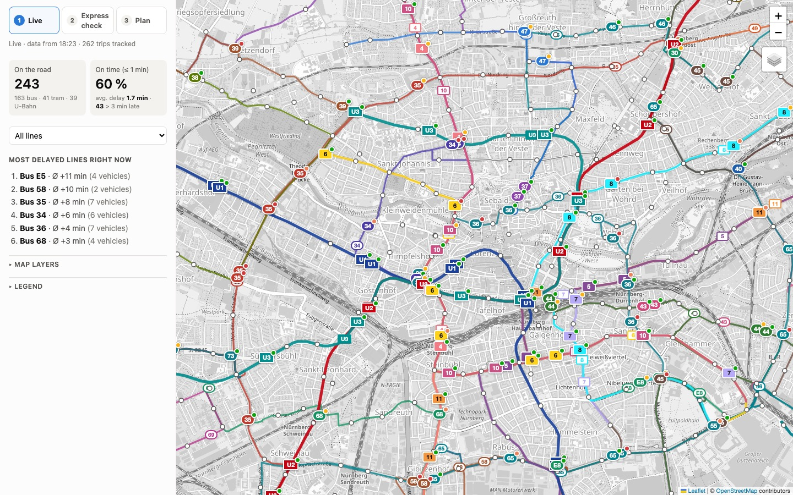
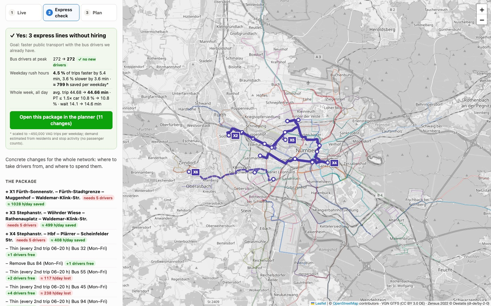
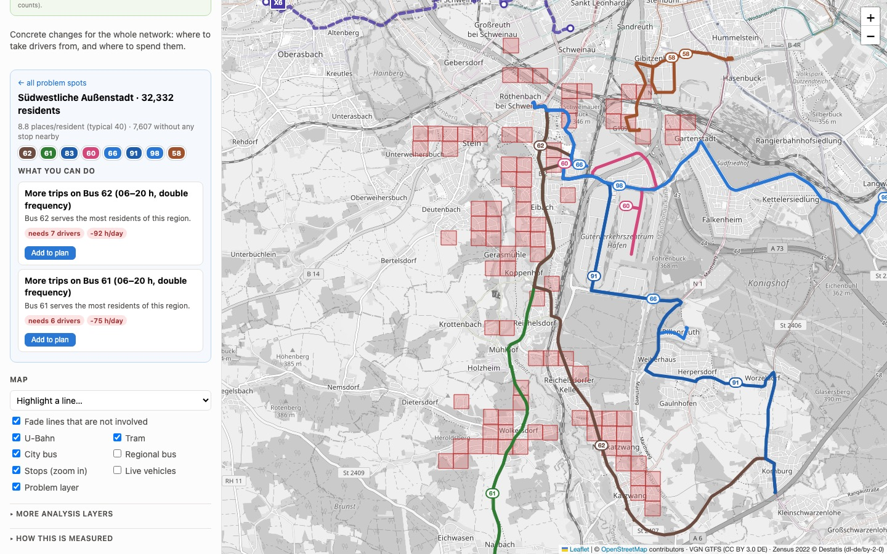
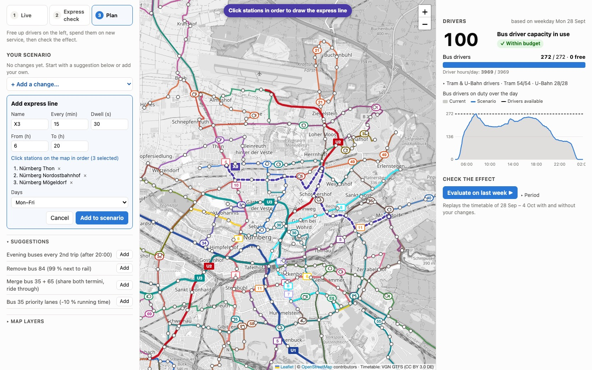
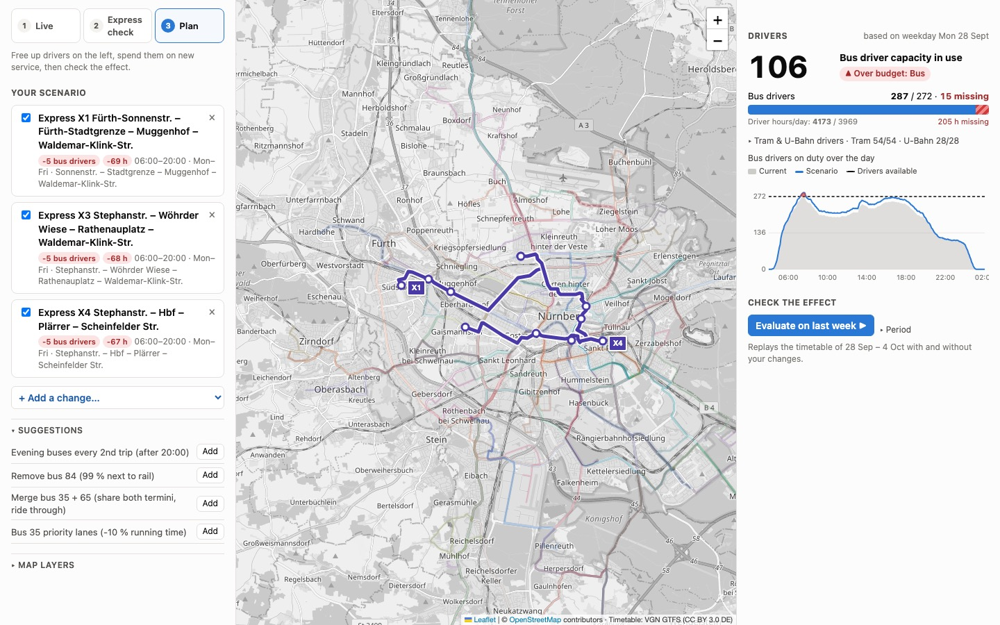
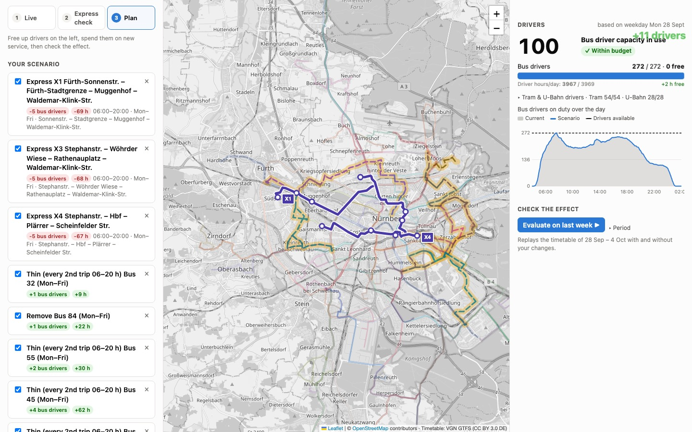
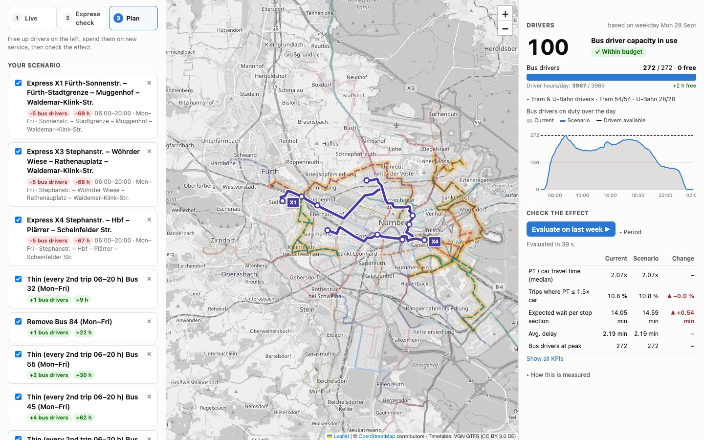

Express buses for Nuremberg, with the drivers we already have
An interactive planning tool. It finds express lines worth running, shows where to take the drivers from, and keeps the driver budget at exactly 100 %, like a resource bar in a city-building game.
Model results for the reference week 28 Sep – 4 Oct 2026. *Scaled to ~450,000 VAG trips per weekday; demand is estimated from residents and stop activity, not counted. The gains are concentrated in the weekday rush hours, where the express lines run. Averaged over the whole week, travel times barely change and waits get 0.5 min longer, because the drivers come from thinner bus service.
Watch the driver budget move
Every change has a price in drivers. Step through the proposed package, or press play. The three express lines push the budget over 100 %, then eight cuts where rail already runs bring it back. All numbers come from the tool's driver model for a normal weekday.
Bus drivers on duty over the day
Driver balance after each step
How you use it
Three pages, one flow: see what runs now, get the answer, then change things yourself and watch the budget react.
Live: what runs now
Every bus, tram and U-Bahn moves along the streets in real time, coloured by delay. VAG's own live map shows only rail. Every finished trip is recorded as delay data.

123- 1Vehicles on the road and punctuality right now
- 2Most delayed lines; click one to show only that line
- 3Each vehicle follows its line on the street; the dot shows its delay
Express check: the answer in one place
The tool searches the city for express corridors, prices them in drivers and funds them from bus service that duplicates rail.

1234- 1The verdict: three express lines, no new drivers, and who gains or loses
- 2One click opens the whole package in the planner
- 3The package: express lines (+) and the cuts that pay for them (−)
- 4Proposed express lines follow real streets
Drill into a problem area
Under-served regions are whole neighbourhoods built from adjacent cells, named after the district. Selecting one shows its lines, stops and suggestions with their driver cost.

1234- 1Region: residents and how well it is served
- 2The lines serving it; click a chip to highlight that line
- 3Suggestions with driver cost and passenger effect, plus 'Add to plan'
- 4Red cells: the under-served region on the map
Add your own line by clicking stops
Choose 'Add express line', click stations on the map in order, and set frequency and hours. The draft is routed along the streets immediately.

1234- 1Drawing mode
- 2The stops you clicked, in order; remove any with ×
- 3The draft line, routed on real streets
- 4Add it to the scenario: the budget reacts instantly
Every change has a price in drivers
After adding three express lines the inventory shows 106 %: 15 drivers are missing, and the daily curve shows exactly when.

1234- 1Capacity in use jumps to 106 %
- 2The red part of the bar: 15 drivers missing
- 3The scenario curve hits the limit in the morning peak
- 4Each change shows its own cost: −5 drivers, −69 h
Free drivers until the budget is back at 100 %
Thinning bus lines that run next to rail frees drivers one by one. Each card shows what it frees; the inventory animates back to 100 %.

1234- 1Animated feedback: +11 drivers
- 2Back within budget: 272 / 272
- 3The cuts and what each one frees
- 4Thinned lines are marked on the map
Replay last week with and without the changes
One click re-plans every zone-to-zone trip for 28 Sep – 4 Oct and compares travel time, waits, delays and drivers. 'Show all KPIs' opens the full table.

12- 1Run the week-long evaluation
- 2Key KPIs before and after; ✓ better, ▲ worse
How it works
Driver model
The timetable doesn't say which bus does which trip, so trips are chained into vehicle rotations at their end stops (at least a 5-min break). Each running vehicle needs one driver; U2 and U3 run without drivers. Two budgets: drivers at peak and driver hours per day.
Demand and journeys
1 km zones from Zensus 2022 residents and stop activity, combined in a gravity model. A connection-scan planner computes door-to-door times (walk, wait, ride, transfer) for ~76,000 zone pairs. Car times come from OSRM plus rush-hour congestion.
Express lines
Corridors of at least 4 km where public transport loses most time against the car, weighted by demand. Each line stops at the busiest stops and up to two transfer hubs, follows real streets (OSRM) and is timed on that route.
Funding
Bus lines that largely run where rail already serves are thinned (Mon–Fri) or removed. They are ranked by passenger time lost per driver freed, and the cheapest are used until the package is driver-neutral.
Limitations
- Demand is estimated from residents and stop activity, not passenger counts. Real OD or ridership data would be the biggest improvement.
- Week-wide effect is about neutral. The package helps weekday peaks but costs a little service elsewhere. Better funding (for example more bus priority instead of thinning) is the next lever to try.
- Rotations are rebuilt heuristically, without VAG's real duty schedules or labour rules.
- Delays exist only for days on which live data was recorded.
Run it
git clone https://github.com/leon-loeppert/nuremberg-express-bus cd nuremberg-express-bus python3 -m venv .venv && source .venv/bin/activate pip install -r requirements.txt && pip install -e . uvicorn app.livemap.server:app --port 8000 # open http://localhost:8000 · this page: http://localhost:8000/about/